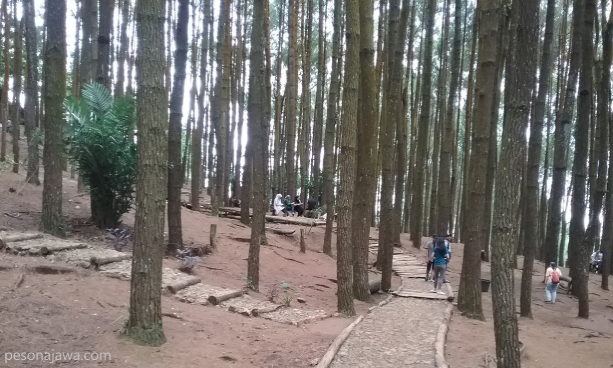
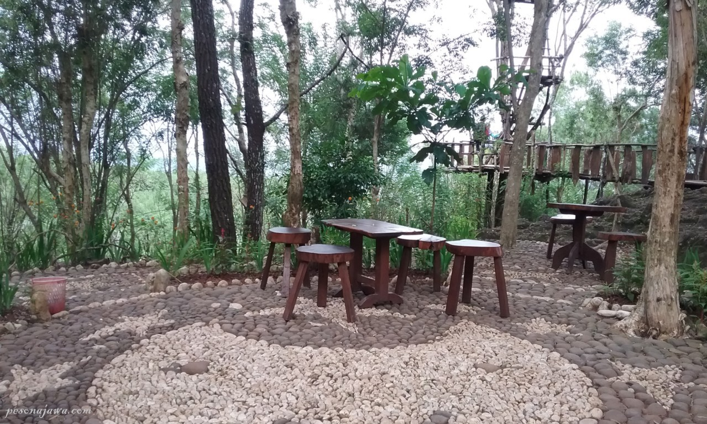

pesonajawa.com -- Nature Tourism
Diperbaharui: Monday, June 14, 2021
Hutan Pinus Mangunan
Address: Jl. Hutan Pinus Nganjir, Desa Mangunan, Kecamatan Dlingo, Kabupaten Bantul
Kecamatan Dlingo, Kabupaten Bantul
S: 7°55'33.60" E: 110°25'49.30"
Lat: -7.92600011826 Long: 110.43035888672

Mangunan
Mangunan adalah sebuah desa yang terletak di Kapanewon Dlingo, Kabupaten Bantul, Daerah Istimewa Yogyakarta dengan alamat kantor desa Jln. Imogiri/Dlingo Km. 05 Mangunan, Dlingo, Kabupaten Bantul.
Di desa ini banyak destinasi wisata menarik yang dapat dikunjungi sahabat pesonajawa untuk menghabiskan waktu seharian di Bantul. Sahabat pesonajawa yang arah perjalanannya dari Kota Yogykarta atau sekitarnya, disarankan melaukan perjalanan kunjungan wisata melalui kota Bantul dan ketika kembali ke Yogyakarta dapat melalui Pathuk kabupaten Gunungkidul.
Terdapat banyak lokasi destinasi wisata disekitar Hutan Pinus Mangunan, seperti bukit Seribu Batu Songgi Langit, Lintang Sewu, Puncak Pinus Becici yang berada pada area satu jalur perjalanan.
Waktu berkunjung terbaik ke lokasi ini adalah pagi hari sekitar pukul 05-06 wib, karena pada pagi hari tersebut kabut masih nampak dan udara sangat sejuk. Sahabat pesonajawa dapat menikmati suasan nyaman dan mendapatkan spot foto yang indah dengan latar belakang kabut di bukit Panguk Kediwung.
Area masuk Hutan Pinus Mangunan
Kunjungan Presiden Joko Widodo
Hutan Pinus Mangunan ini pernah dikunjungi Presiden Joko Widodo (Jokowi) pada tanggal 28 September 2018. Kunjungan bapak Presiden Jokowi tersebut untuk meresmikan KPH (Kesatuan Pengelolan Hutan) secara nasional dan dilaksanakannya pameran usaha hasil kehutanan.
Berapa lama perjalanan dari Yogyakarta (Malioboro) ke Hutan Pinus Mangunan?
Apabila sahabat pesonajawa datang dari arah Malioboro dan secara khusus akan mengunjungi destinasi wisata ini yang jaraknya sekitar 23 km, sahabat pesonajawa diasarankan berangkat dari Malioboro pukul 04.30 sehingga sampai di obyek wisata ini kurang dari pukul 05.30. Bila sahabat pesonajawa beruntung, maka bisa menyaksikan kabut yang menyusup diantara pohon pinus.

Area beristirahat dan spot foto menarik
Apabila sahabat pesonajawa tidak bisa berkunjung pada pagi hari, sahabat pesonajawa bisa datang kesini kapanpun. Destinasi wisata ini dibuka setiap saat, sehingga bisa datang pagi hari ketikak matahari sudah terbit dengan menyambut udara yang sangat segar dan dingin dengan embun bening yang masih tersisa.
Sahabat pesonajawa juga dapat berkunjung ke sini ketika sore hari sambil menikmatai angin sepoi-sepoi yang melintas diantara pohon pinus. Sahabat pesonajawa yang senang foto-foto (pecinta fotografi) akan dimanjakan oleh spot yang menarik dan indah karena bisa dilakukan dietiap sudut area hutan pinus ini.
Destinasi wisata ini berada di ketinggian 504 meter dpl.
Estimasi lamanya kunjungan di tempat ini adalah 90 menit.
Perkiraan jam buka antara pukul 05:00:00 sampai dengan 20:00:00 wib.
Tourist Attraction
Kabupaten Bantul